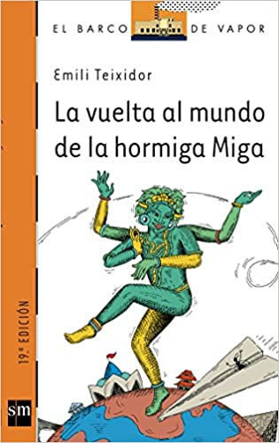
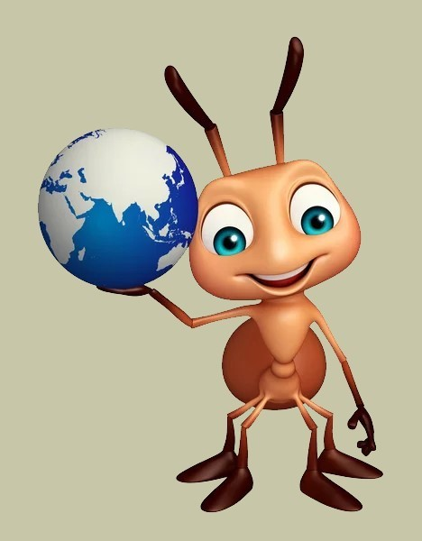

Siempre he sido una hormiga muy viajera y trabajadora. Me encanta viajar por todo el mundo.
Para empezar nací lejos de aquí, en una colonia por las tierras del sur, y más al sur todavía me
llevaron a vivir,
cruzando el mar.
Después de unos años me asenté en la colonia donde todavía sigo, pero siempre seguí viajando por
todo el territorio y más allá.
Exploré y viví en tierras lejanas, conocí muchos tipos de hormigas diferentes y terminé siendo una
hormiga muy reconocida.
¡Hasta me escribieron un libro! Échale un ojo.

¿Tienes curiosidad por saber dónde he estado? Pásate por mi portfolio y échale un vistazo.
Esta soy yo
